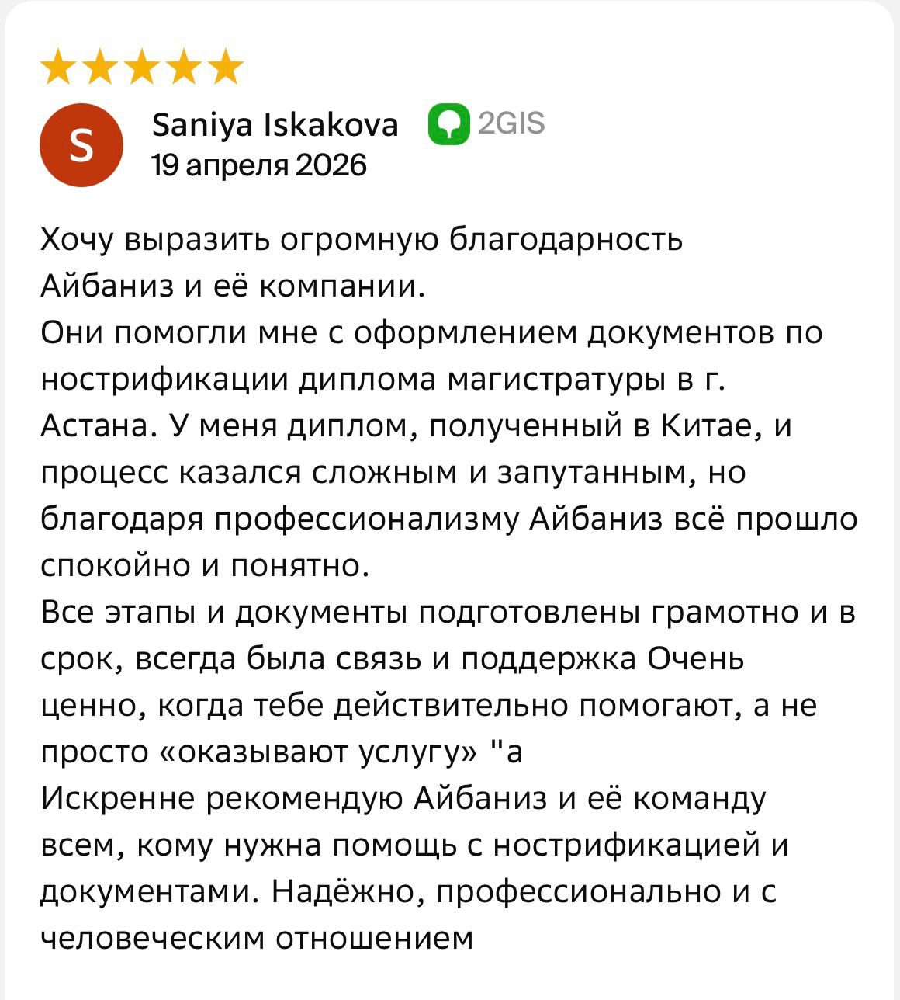
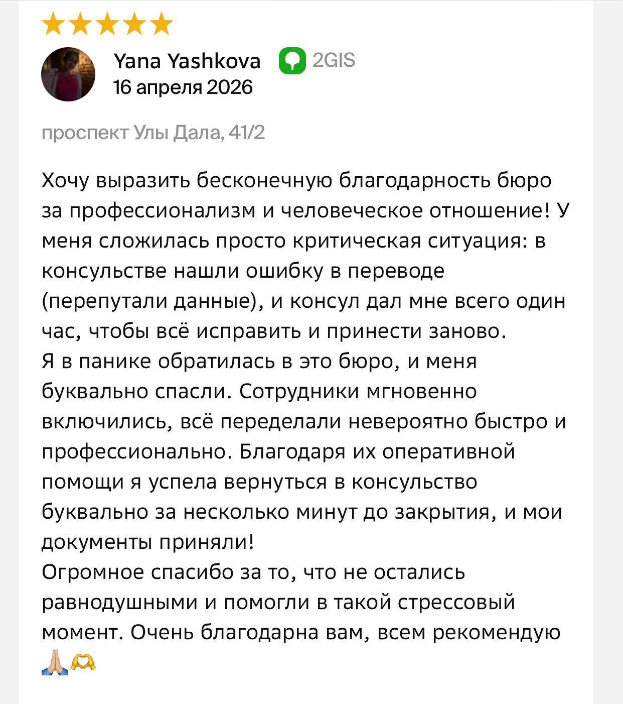

Нострификация дипломов и аттестатов
Помогаем пройти процедуру признания иностранных документов об образовании в Казахстане и за рубежом
Что такое нострификация?
Нострификация — это официальное признание документа об образовании, выданного в другой стране.
Процедура может потребоваться для трудоустройства, поступления в учебное заведение, получения лицензий и подтверждения квалификации.
Какие документы мы сопровождаем
Диплом бакалавра
Диплом магистра
Аттестат школы
Приложение к диплому
Академическая справка
Сертификаты об обучении
Как проходит процедура
Проверка документов
Перевод и заверение
Подготовка пакета документов
Подача в компетентные органы
Получение результата
Почему выбирают нас
- ✔ Консультация по документам
- ✔ Работаем с документами разных стран
- ✔ Сопровождение на всех этапах
- ✔ Срочная обработка заявок
- ✔ Работаем по всему Казахстану
Часто задаваемые вопросы
Сколько длится нострификация?
Срок зависит от страны выдачи документа и требований уполномоченного органа. Обычно от 1 до 3 месяцев.
Нужен ли перевод диплома?
Да, в большинстве случаев требуется официальный перевод и нотариальное заверение.
Можно ли подать документы дистанционно?
Да, многие этапы можно пройти удаленно.
Велиева Айбаниз, руководитель компании
Я являюсь руководителем компании Aibaniz и уже более 13 лет помогаю клиентам решать вопросы, связанные с апостилем, консульской легализацией, нострификацией и переводом документов на все языки мира
Мы сопровождаем оформление документов для использования как в Казахстане, так и за рубежом, обеспечивая профессиональный сервис и индивидуальный подход к каждому клиенту
Для нас важно, чтобы каждый клиент получил понятную консультацию, качественное сопровождение и уверенность в результате
Реальные отзывы наших клиентов

